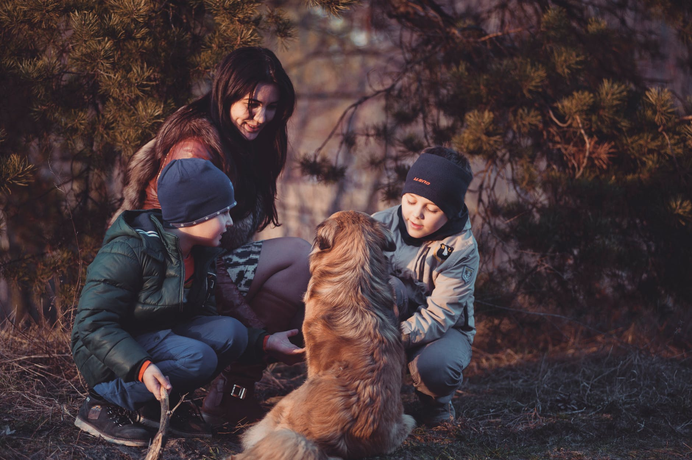

Durham House of Pets was founded in 2012 by Kathleen Doherty. Kathleen's two kids,
Emily and Patrick, always brought home animals that they found as kids: cats that wandered into the yard, frogs
they saw hopping on the sidewalk on their way home from school, even their neighbor's dog for an afternoon.
Kathleen's friends always called the Doherty house the "Durham House of Stray Pets".
She was walking with
friends in downtown Portsmouth when she overheard a couple talking about all the things they would need
to buy if they were going to adopt a dog or cat from the local shelter. After giving it some thought,
Kathleen realized there weren't any pet stores nearby to pick up supplies for pets, even she had to drive
all over to pick up supplies for the stray animals in her house.
Inspired by this idea, and backed with a business degree from the Whittemore School of Business and
Economics (2006), she em"bark"ed on the venture to open up Durham House of Pets.
Durham House of Pets officially opened its doors on Saturday, May 11, 2013 at their 15 Main St location in Durham, NH.
The store features high-end cat and dog accessories, top-rated food and treat brands, snake and fish tanks,
and much, much more. Kathleen and her team have also connected with local pet specialty stores and now sell
homemade, artisan dog treats.
In 2014, Durham House of Pets was named the best new store in the New Hampshire Seacoast region. Kathleen and
the Durham House of Pets team has continued to expand its horizons by opening a new location in 2016
in Portsmouth, NH and has plans to set up another one in Kittery, ME in the next few years.
Durham House of Pets thanks all of its loyal customers and supporters for helping it grow over these past
five years and we can't wait to see what the next five will bring!
We provide you with a personalized experience each time you visit or shop with us. Our staff is specially trained in suggesting products and accessories best-suited for your pet. Being a local business, Durham House of Pets is conveniently located in the New Hampshire Seacoast area and can offer promotional deals to local clients. We also only provide our clients with the highest quality in all of our products, and offer refunds or store credit for any products that do not meet our high standards for customer satisfaction. We can't wait to see you in our stores soon!